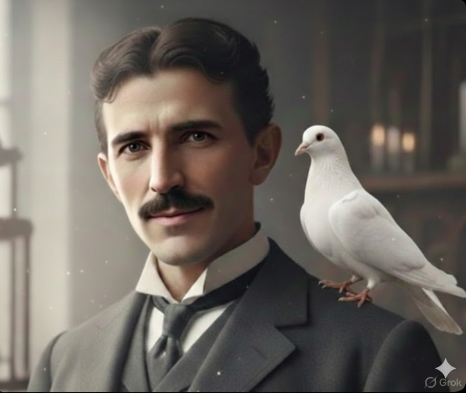
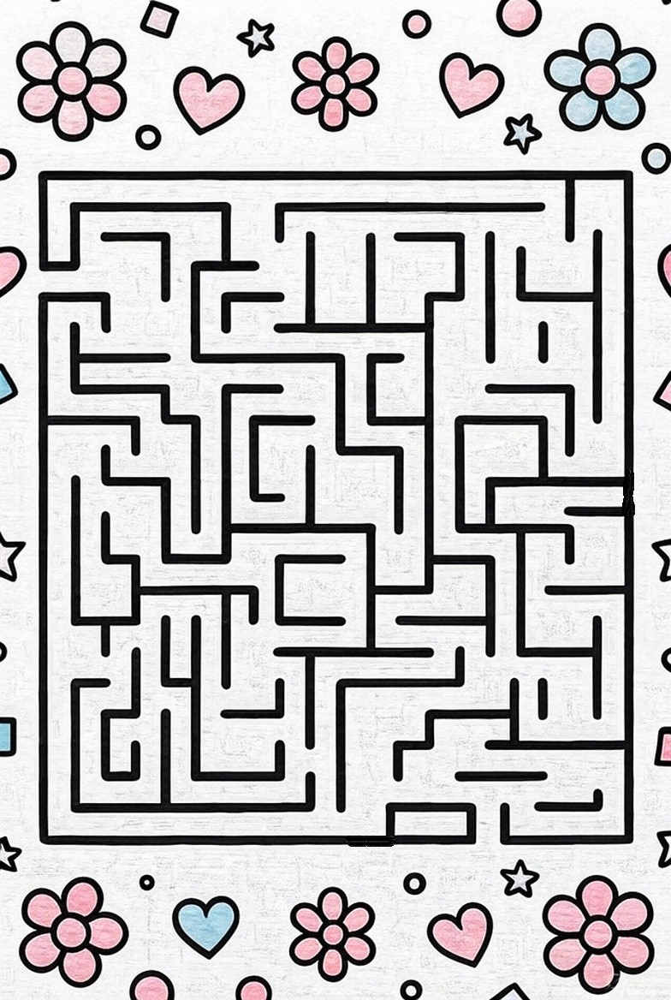

⚖️ 體重單位轉換
Weight & Mass Converter
請輸入體重並點擊轉換
✨ 九九乘法表測驗 ✨
Multiplication Practice
請作答後點擊「送出答案」
日常生活會話應答

❄️ ❄️ ❄️ 迷宮區 ❄️ ❄️ ❄️
請鍵盤按ctrl + 把迷宮區變大
滑鼠拖曳就能畫出線條
關卡 1/100

❄️❄️Maze Zone❄️❄️
Press "Ctrl" and "+" to zoom in.
Drag your mouse to draw lines.
🎮 訓練反應 · 小遊戲樂園 🕹️
Training Reflexes · Fun Mini Games
💡 進入遊戲後按左上角 ⬅️ 返回 即可回本頁
跳跳貓
Jumping Cat Game
小精靈
Little Fairy Game
飛機射擊
Airplane Shooter
外星人物資大冒險
Alien Adventure Game
美國可汗學院 免費學習資源
Free Learning · Khan Academy (含中文頁面)
🎵 點擊播放開始聽音樂
⏸ 已暫停
🔊 音量
70%
致謝與素材來源：
XAI Grok / Google Gemini / Micropaint / goldandjadeM.
影片 grok / 圖片 Gemini / 遊戲 Gemini, Grok, Microsoft VS
音響音樂使用 Ocean_coast_02_092025br0659AM by YevgVerh (freesound - CC License)
歌曲創作：Gemini
✉️ 願望區域 / 寫信給我
辛苦的爸媽們，你們希望做什麼區域呢！ 不保證! 但可嘗試!!
📮 sleepingbutnotpretty@gmail.com
⚫ 五子棋 AI 對戰 ⚪
Gomoku: Player (Black) vs. AI (White)
💡 先連成 5 顆同色棋子者獲勝 · First to get 5 in a row wins!
⚫ 輪到玩家 (黑棋下子) · Player Turn
🧠 記憶配對遊戲 🧠
Memory Match Game
已配對：0 / 3
⭐ 語文練習基礎 🌈
⭐ 益智遊樂小天地 🌈
🛒🏪🧮
🛒 小小超市收銀台 🏪
Mini Supermarket & Cash Register
雙語買賣購物 · 算錢付錢 · 找錢大挑戰 · 兒童小計算機
Bilingual Shopping Fun · Coin Counting & Paying · Change Challenge · Kids Calculator
🏪 點我進入小小超市 ➡️ Click to Enter Mini Supermarket🔷 趣味認形狀 · 雙語專區 🔶
🔊 點擊形狀聽中英發音 & 認識形狀
乙太通訊中心
閱讀小故事
正在為你準備溫暖的故事……
數學時間 🌈 Math
<
載入中...
看圖練說話 🌈Look and Speak
📖 認知字詞卡 · 雙語學習 🌟
🔊 點擊大卡片或按鈕聽真人發音 · Listen & Learn
🎚️ 滑動快速選詞:
第 1 / 150 詞